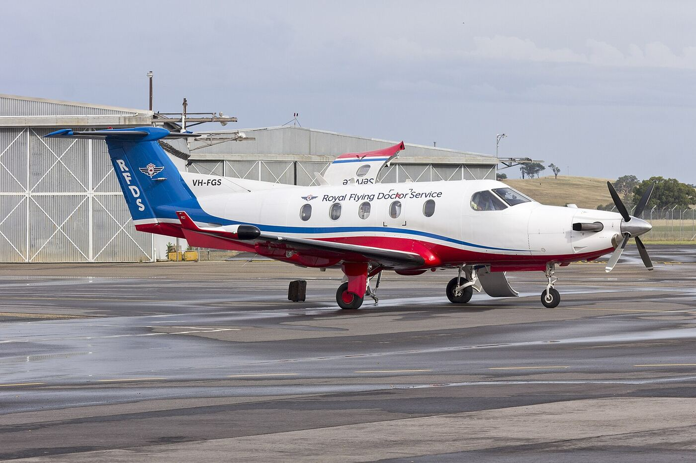

Where was this recorded?
One hour of forest audio, six ways a recording gives away its place, and two small planes nobody heard.
Follow the cluesPictured: the first plane, an engine tone sliding from about 190 to 80 Hz as it passes, 36 minutes into the hour.
We tried six location clues on one real hour of forest audio  , and only two faint propeller planes
, and only two faint propeller planes
YouTuber colsto showed that faint propeller tones in the background of a recording form Doppler curves, and that matching them against public flight tracking (ADS-B) can place the recording to about 100 m (IBTimes). He released no code. This page rebuilds his pipeline on his published raw recording, after first trying every other common clue on the same file.
Use these techniques on your own media, or for verification and journalism. Using them to find a private person's home is stalking. Nothing you load into the demos is uploaded; it all runs in your browser.
How far each clue narrows the map
Investigators stack clues: one rules out a continent, another picks a valley, a third picks the street. The ranges are rough orders of magnitude; the right column is what each clue gave on our recording.
File metadata
Always the first check. Phone cameras write GPS coordinates, a timestamp and the camera model into a photo's EXIF block. Most platforms strip it on upload, but files sent as documents, emailed or copied directly often keep it.
No file yet. HEIC photos from iPhones need converting to JPEG first.
A YouTube upload. The platform re-encodes video and audio and passes no camera metadata through, so there is nothing to read.
Mains hum
Recordings made near mains power often pick up a faint hum at the grid frequency: 50 Hz across Europe, Africa, most of Asia and Australia, 60 Hz across North America, much of South America, Taiwan, South Korea and western Japan. The frequency also wanders by a few hundredths of a hertz, in step across a whole grid, so forensic labs match that wander against grid logs to recover when a recording was made.
The first 5 minutes are analysed. The plot shows 30 to 200 Hz; dotted lines mark the 50 Hz and 60 Hz families.
No hum peaks in either family in the 5-minute stretch we tested. Expected outdoors, away from wiring.
Sun and shadows
At any instant the sun stands straight overhead at one point on Earth. A shadow's length gives the sun's height, and every place that sees the sun at that height lies on a circle around that point. Add the direction the shadow points and only one spot on the circle fits.
Height and length in the same units; bearing in degrees from north. Sun position from standard astronomical formulas (about 0.1°, ignoring refraction). A clock error of 4 minutes moves the answer by 1° of longitude.
Not used. We analysed the audio track only; the frames would need a measurable shadow and a trusted clock.
Skyline and terrain
Ridges form a horizon line that is close to unique for each viewpoint. Researchers render the horizon from an elevation model at many candidate points and compare it with the ridge traced from a photo. Click anywhere on the map to draw the 360° horizon a person standing there would see.
Terrain: AWS Terrain Tiles at zoom 10 (pixels of 120 to 150 m), radius 28 km, with Earth curvature and standard refraction. Flat land gives a flat line: this clue needs relief.
Loading the default viewpoint…
Not used. Audio only, and a view into forest canopy shows no horizon to match.
Visual matching
The most common approach for photos: compare what is visible with imagery whose location is already known.
Search against street imagery
Build a database of street-level photos with known positions (Google Street View, Mapillary, KartaView), turn each into a compact descriptor, and look up the nearest matches. Accurate where coverage is dense; the reference set is the cost, since commercial imagery is billed per image.
Predict from pixels
Models trained on millions of geotagged photos (PlaNet, GeoCLIP, PIGEON) read vegetation, road markings, architecture and light. Usually right about the country, sometimes the city.
Signs, text, infrastructure
Script, phone number formats, plates, bollards, poles, road-line colours, driving side. Manual and very effective: it is how competitive GeoGuessr players work.
Check the conditions
Star fields and the moon's phase fix a latitude and a date. Cloud and rain can be checked against archived radar and satellite images for the claimed time and place.
Not used. Trees and birdsong might suggest a region; they cannot pick a town.
The planes nobody heard
With every other clue empty, what is left is a sound nobody notices.
Small propeller planes leave faint engine tones that slide down in pitch as they pass. Each slide gives a plane's speed and closest distance, and ADS-B logs say which planes were where.
Find the curves
The hour is trees, birds and wind. Remove each frequency's steady background from the spectrogram and look at 60 to 260 Hz: two descending S-curves appear, marked by the dashed lines.
How fast, how close?
For a source flying straight at speed v, the pitch slides from f₀/(1−v/c) down to f₀/(1+v/c). The size of the drop gives the speed; how quickly it drops gives the closest distance. Fit the second plane by hand.
Line: your curve. Dots: the second plane as tracked in the real recording. Sound travel time is modelled.
Root-mean-square gap between your curve and the tracked points. The least-squares fit gets to 0.7 Hz.
Two passes, 920 s apart
Each real curve is ridge-tracked on the spectrogram and fitted by least squares. An automatic detector written later finds the same two passes without hand tuning, 920.4 s apart against colsto's 920 s.


Search the whole country
ADS-B archive for 8 Sep 2026 (adsb.lol, 3.9 GB), known jets removed, every flight interpolated to 1 s. For each 200 m ground cell we compute when each plane's closest approach would have been heard, using 3D slant distance over terrain and the speed of sound.
Every stage, with counts
colsto reported about 73,000 and then 15,000 at the equivalent stages. Ours are larger because our speed and distance windows are deliberately wider.
Score and rank
For each surviving cell the real flight path is replayed, the Doppler curve that position would have heard is predicted, and both passes are compared against the recording with one shared clock offset.
Hover the line. A clear winner would stand far above rank 2; here the line is almost flat.
Top 25 distinct flight pairs, rounded to about 1 km. The lime dot is rank 1.
Top 10 cells
Check it where the answer is known
We ran the detector on 10 hours of audio from a public webcam whose location is published (8 Nov 2026, 13:00 to 23:00 UTC), with that day's full ADS-B archive. The camera's position was used only to grade the result, never to steer the search.
Props within 12 km
Top row: aircraft logged within 12 km, lime when the detector heard them. Bottom row: every pass the detector accepted; white ones match no logged aircraft.
The detector heard 3 of the 5 propeller planes within 8 km; the best match, a Pilatus PC-12, landed 1.5 s from its logged pass at 141.7 m/s against 141.9. But 7 of the 10 passes it accepted match no logged aircraft, and with those false passes the blind search narrows the map without finding the camera.
How far the reproduction got
colsto's method has five steps. On his own recording we reach the fourth; the last one, a single location, is still open.
What reproduced
The first stages hold up on colsto's own recording.
What is still missing
The final scoring does not yet produce one clear winner. Four gaps, in the order we would close them:
- Tighter event windowscolsto measured each curve's speed and distance range by hand. Ours are deliberately generous, so many more flight pairs qualify.
- Whole-hour silenceThe silence filter covers only the gap between the passes and only propeller aircraft. The full hour, with jets and helicopters, would prune far more.
- Trajectory detailScoring on raw ADS-B with turns, climbs and harmonics is the step colsto says takes 15,000 candidates down to one.
- Date boundaryOnly the 8 Sep UTC archive was used. A recording in a US evening falls partly in 9 Sep UTC.
Run it
git clone https://github.com/kvnloo/doppler-geoloc cd doppler-geoloc/pipeline uv venv && uv pip install numpy scipy pandas \ pyarrow soundfile matplotlib pillow # stage order and data: pipeline/README.md
How to defeat it
The technique needs prop traffic a spectrogram can pick up, good ADS-B coverage and a known date. Cutting the audio, heavy noise suppression or removing the low band defeats it more reliably than a simple high-pass, per colsto's tests. This page shows only rounded candidate locations and identifies no camera.